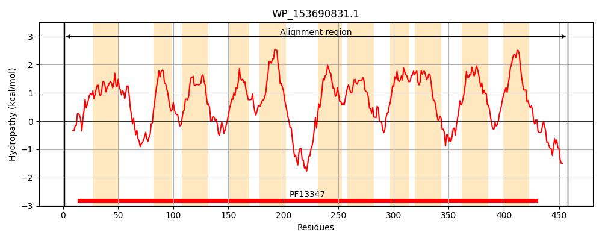
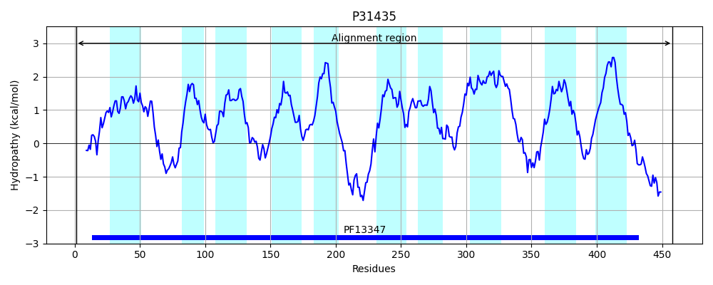
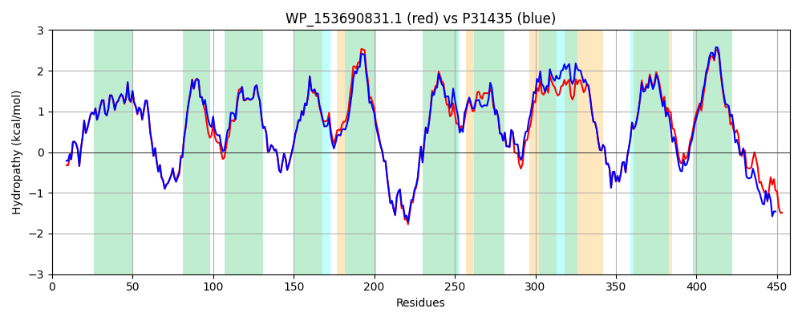

Hit Accession: P31435
Hit TCID: 2.A.2.3.4
Hit Description: gnl|BL_ORD_ID|9765 gnl|TC-DB|P31435|2.A.2.3.4 Inner membrane symporter yicJ - Escherichia coli.
Mach Len: 458
e:0.000000
Query TMS Count : 11
Hit TMS Count: 10
TMS-Overlap Score: 10.950000
Predicted Substrates:CHEBI:27350;xyloside
BLAST Alignment:
Score: 2097 , Bit scores: 812 bits, E-value: 0.0e+00, Alignment length: 458, Percentage identity: 85
Query: 1 MKDHILSVKEKIGYGMGDAASHIIFDNVMLYMMFFYTDIFGIPAGFVGTMFLLARALDAISDPCMGLLADRTRSRWGKFRPWILFGAIPFGLVCVLAYSSPDLSHNGKLIYAAVTYTLLTLLYTVVNIPYCALGGVITDNPTQRISLQSWRFVLATAGGMLSTVLMMPLVNFIGGEDKALGFQGGIAVLSVIAFLMLAFCFFTTKERVEAPPSSTSMREDLRDIWRNDQWRVVGVLTILNILAVCVRGGAMMYYTTWIMGSAALFTVFLTTYCVGNLIGSALAKPLTDWKCKVSVFRWTNALLAVLSVAMFFVPMDAEITMFTFIFIIGVLHQLVTPIQWVMMSDTVDYGEWCNGKRLTGISFAGTLFVLKLGLALGGALIGWMLAGGGYDAAAKTQNSATLTIIIALFTLVPAVCYLLSAVIAKRYYTLKTPFLKKMMAELAEGARRNEQDFTAAPI 458
MK +LSVKEKIGYGMGDAASHIIFDNVMLYMMFFYTDIFGIPAGFVGTMFL+ARALDAISDPCMGLLADRTRSRWGKFRPW+LFGA+PFG+VCVLAYS+PDLS NGK+IYAA+TYTLLTLLYTVVNIPYCALGGVIT++PTQRISLQSWRFVLATAGGMLSTVLMMPLVN IGG++K LGFQGGIAVLSV+AF+MLAFCFFTTKERVEAPP++TSMREDLRDIW+NDQWR+VG+LTI NILAVCVRGGAMMYY TWI+G+ +F FLTTYCVGNLIGSALAKPLTDWKCKV++F WTNALLAV+S+AMFFVPM A ITMF FIF+IGVLHQLVTPIQWVMMSDTVDYGEWCNGKRLTGISFAGTLFVLKLGLA GGALIGWMLA GGYDAA K QNSAT++IIIALFT+VPA+CYLLSA+IAKRYY+L T LK +M +LA+G RR +Q FT+ +
Sbjct: 1 MKSEVLSVKEKIGYGMGDAASHIIFDNVMLYMMFFYTDIFGIPAGFVGTMFLVARALDAISDPCMGLLADRTRSRWGKFRPWVLFGALPFGIVCVLAYSTPDLSMNGKMIYAAITYTLLTLLYTVVNIPYCALGGVITNDPTQRISLQSWRFVLATAGGMLSTVLMMPLVNLIGGDNKPLGFQGGIAVLSVVAFMMLAFCFFTTKERVEAPPTTTSMREDLRDIWQNDQWRIVGLLTIFNILAVCVRGGAMMYYVTWILGTPEVFVAFLTTYCVGNLIGSALAKPLTDWKCKVTIFWWTNALLAVISLAMFFVPMQASITMFVFIFVIGVLHQLVTPIQWVMMSDTVDYGEWCNGKRLTGISFAGTLFVLKLGLAFGGALIGWMLAYGGYDAAEKAQNSATISIIIALFTIVPAICYLLSAIIAKRYYSLTTHNLKTVMEQLAQGKRRCQQQFTSQEV 458 | Protein Hydropathy Plots: |
|---|
|  |  |
Pairwise Alignment-Hydropathy Plot:
|
|---|
|  |